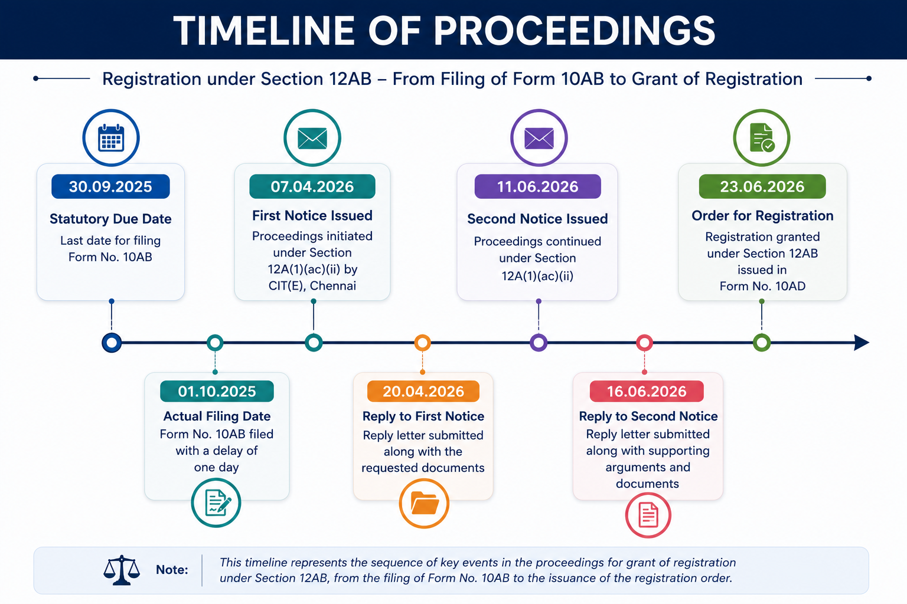

Introduction
Obtaining registration under Section 12AB of the Income-tax Act is a crucial milestone for charitable and religious trusts seeking income tax exemption. While the online application process through Form 10AB appears straightforward, many applications are selected for scrutiny, and the Income Tax Department may issue notices seeking clarifications, supporting documents, and explanations before granting registration. A well-structured, fact-based, and legally supported response plays a decisive role in the outcome of such proceedings. In this article, I share a practical case study based on an actual professional assignment in which a trust's Form 10AB application was scrutinized through multiple notices issued by the Income Tax Department. By presenting the timeline of proceedings, the nature of the queries raised, the approach adopted while preparing the replies, and the key lessons learned, this article aims to provide useful guidance to Chartered Accountants, tax professionals, trustees, NGOs, and anyone involved in trust registration and compliance. Certain identifying details have been omitted to preserve client confidentiality
Background of the Case
The client, a public charitable trust having registered office in chennai, was established under a duly registered Trust Deed and has been engaged in various charitable activities for over a decade. The trust held a valid registration under Section 12A of the Income-tax Act up to Assessment Year (AY) 2026–27 (i.e., Financial Year ending 31 March 2026). As per the applicable provisions, the trust was required to apply for renewal of its registration under Section 12AB by filing Form No. 10AB at least six months before the expiry of the existing registration, i.e., on or before 30 September 2025. However, the trust filed Form No. 10AB on 1 October 2025, resulting in a delay of one day. Consequently, the Commissioner of Income Tax (Exemptions), Chennai initiated proceedings and issued two notices seeking explanations and supporting documents. Detailed replies, supported by relevant documentary evidence, were submitted in response to each notice within the prescribed time. After examining the submissions and the supporting documents, the Commissioner was satisfied with the explanations furnished and granted registration under Section 12AB by issuing Form No. 10AD.
Timeline of Proceedings

Issues Raised in the First Notice and Response Submitted
Issues Raised in the First Notice
During the proceedings under Section 12A(1)(ac)(ii) of the Income-tax Act, 1961, the Commissioner of Income Tax (Exemptions), Chennai [CIT(E)] issued the first notice seeking various documents and clarifications to verify the genuineness of the trust, its charitable activities, constitutional documents, financial position, and compliance with the statutory requirements governing registration under Section 12AB.
Information and Documents Called For
- A copy of the application filed in Form No. 10AB.
-
Details regarding filing of Form No. 10AB:
- Whether the application was filed within the prescribed time limit.
- If filed belatedly, reasons for the delay together with supporting documentary evidence.
- A detailed note explaining the charitable or religious activities carried out during the previous three financial years (or since inception, whichever is shorter).
-
Details of all institutions or entities managed by the trust, including:
- Educational Institutions
- Medical Institutions
- Hospitals
- Places of Worship
- Any other institution operated by the trust
-
Certified copies of constitutional documents such as:
- Trust Deed / Memorandum of Association / Articles of Association
- Registration Certificate issued by the competent authority
- Copies of all amendments made to the constitutional documents
- Copies of existing registrations or approvals, including registration granted under Section 12AB, Section 80G, Section 10(23C), or Section 10(46), wherever applicable.
- Copy of the registration or approval granted under the earlier provisions of the Income-tax Act prior to 1 April 2021.
- Copies of any earlier rejection orders, if any, issued under Section 12A, Section 10(23C), or Section 80G.
-
Certified financial statements for the Financial Years
2024–25, 2023–24 and 2022–23, including:
- Income & Expenditure Account
- Balance Sheet
- Audit Report
- Contact details of the Managing Trustee and the Authorised Representative, including their names, telephone numbers and e-mail addresses.
Response Submitted Against the First Notice
A comprehensive reply was prepared and submitted in response to the first notice issued by the Commissioner of Income Tax (Exemptions), Chennai. The reply was drafted in a structured, professional, and legally supported manner to address every query raised by the Department. Each point contained in the notice was answered separately with appropriate explanations, supported by relevant documentary evidence, thereby facilitating a clear and systematic examination of the application.
For ease of reference and better presentation, the reply submitted before the Commissioner of Income Tax (Exemptions), Chennai was organised into the following three sections:
Structure of the Reply
Acknowledgement of Receipt of Notice
Confirmation of receipt of the notice issued by the Commissioner of Income Tax (Exemptions).
Our Submissions
Point-wise replies addressing every query raised in the notice, supported by relevant documents, factual explanations, and statutory provisions wherever applicable.
Prayer and Conclusion
A concluding request seeking favourable consideration of the submissions and grant of registration under Section 12AB in accordance with law.
The complete reply submitted before the Commissioner of Income Tax (Exemptions), Chennai may be downloaded below.
Download Reply Submitted Against the First Notice (PDF)Issues Raised in the Second Notice and Response Submitted
Issues Raised in the Second Notice
In the second notice, the Commissioner of Income Tax (Exemptions), Chennai [CIT(E)] referred to the provisions of Section 12A(1)(ac)(ii) of the Income-tax Act, 1961, which require a trust or institution holding registration under Section 12AB to file an application for renewal in Form No. 10AB at least six months prior to the expiry of the existing registration.
Observation of the CIT(E)
The CIT(E) observed that the trust had not filed Form No. 10AB within the prescribed statutory time limit. Consequently, the trust was called upon to explain the circumstances surrounding the delay and justify the admission of the application despite such delay.
Clarifications Specifically Sought
The notice specifically required the trust to explain the following:
-
Reason for Delay
The reasons for the delay in filing the application for renewal in Form No. 10AB.
-
Admission of Delayed Application
Why the application filed in Form No. 10AB should be admitted and processed notwithstanding the delay in filing.
Core Legal Issue
The second notice effectively narrowed the proceedings to a single core legal issue — whether the delay in filing Form No. 10AB could be condoned and whether the application deserved consideration on merits under the powers available to the Commissioner under the Income-tax Act, 1961.
Response Submitted Against the Second Notice
During the proceedings under Section 12A(1)(ac)(ii) of the Income-tax Act, 1961, the Commissioner of Income Tax (Exemptions), Chennai [CIT(E)] issued the first notice seeking various documents and clarifications to verify the genuineness of the trust, its charitable activities, constitutional documents, financial position, and compliance with the statutory requirements governing registration under Section 12AB.
Structure of the Reply
Acknowledgement of Receipt of Notice
Confirmation of receipt of the notice issued by the Commissioner of Income Tax (Exemptions).
Our Submissions
Point-wise replies addressing every query raised in the notice, supported by relevant documents, factual explanations, and statutory provisions wherever applicable.
Prayer and Conclusion
A concluding request seeking favourable consideration of the submissions and grant of registration under Section 12AB in accordance with law.
The complete reply submitted before the Commissioner of Income Tax (Exemptions), Chennai may be downloaded below.
Download Reply Submitted Against the Second Notice (PDF)Legal Provisions and Judicial Precedent Relied Upon
The following statutory provisions and judicial precedent were relied upon while preparing the replies submitted before the Commissioner of Income Tax (Exemptions), Chennai:
Section 12A(1)(ac)(ii) of the Income-tax Act, 1961
This provision requires a trust or institution already registered under Section 12AB to file an application for renewal of registration in Form No. 10AB at least six months prior to the expiry of the existing registration.
First Proviso to Section 12A(1)(ac)
The proviso empowers the Principal Commissioner of Income Tax (PCIT) or Commissioner of Income Tax (CIT) to condone delay in filing an application for registration or renewal where sufficient and reasonable cause for the delay is established.
Rule 17A of the Income-tax Rules, 1962
Rule 17A prescribes the forms, procedure, and supporting documents required for obtaining registration or renewal of registration under Section 12AB of the Income-tax Act, 1961.
Judicial Precedent: Sunder Nagar Satsang Sabha v. Commissioner of Income Tax (Exemptions)
Reliance was placed on the decision of the Hon'ble Income Tax Appellate Tribunal, Mumbai Bench, wherein the Tribunal held that delay in filing an application for registration may be condoned in appropriate circumstances. In that case, the Hon'ble ITAT directed the Commissioner of Income Tax (Exemptions) to reconsider the application after condoning a delay of 16 months, thereby recognising that procedural delays should not defeat a genuine claim for registration where sufficient cause is established.
ITAT Mumbai Bench Order
Official judicial record relied upon in the submissions.
Disclaimer Regarding ITAT Order
The ITAT order referred to above is reproduced from the official judicial records of the Income Tax Appellate Tribunal for educational and informational purposes only. Any personal or sensitive information, where necessary, has been appropriately redacted. Readers are advised to refer to the official judicial records for the complete and authoritative text of the order.
Outcome of the Proceedings
Registration Granted under Section 12AB
After carefully examining the submissions, supporting documents, and legal contentions furnished in response to both notices, the Commissioner of Income Tax (Exemptions), Chennai was satisfied with the explanations provided by the trust. Accordingly, the Commissioner passed an order granting registration under Section 12AB of the Income-tax Act, 1961 and issued the registration order in Form No. 10AD.
Registration Order (Redacted Copy)
Front page of the Registration Order issued by the Commissioner of Income Tax (Exemptions), Chennai. Personal and confidential information has been redacted for privacy.

Click the image to view the full-size copy.
What This Case Demonstrates
This case demonstrates that a delay in filing an application, by itself, does not necessarily result in rejection. Where the applicant establishes sufficient cause for the delay and supports the application with complete documentary evidence and well-reasoned legal submissions, the competent authority may exercise the powers available under the Act to consider the application on its merits.
Key Lessons for Trusts
The present case offers several important lessons for charitable and religious trusts seeking registration or renewal under Section 12AB of the Income-tax Act, 1961.
Monitor statutory due dates carefully
Trusts should maintain a proper compliance calendar to ensure that applications for registration or renewal are filed well within the prescribed statutory time limits.
Do not ignore departmental notices
Every notice issued by the Income Tax Department should be responded to promptly, accurately, and within the stipulated time.
Maintain complete and updated records
Constitutional documents, financial statements, activity reports, audit reports, and other supporting records should be preserved and updated regularly, as these are frequently called for during registration proceedings.
Provide issue-wise and evidence-based replies
Replies should directly address each observation raised by the Department and be supported by relevant documentary evidence and applicable legal provisions.
Rely on the applicable legal framework
Appropriate reference to statutory provisions, rules, circulars, and judicial precedents can significantly strengthen the credibility and persuasive value of the submissions.
A procedural delay is not always fatal
Where a genuine and reasonable cause exists, the delay should be properly explained with supporting evidence. The competent authority has the discretion, in appropriate cases, to consider such explanations in accordance with the provisions of the Act.
Seek professional assistance whenever necessary
Registration proceedings under Section 12AB involve both factual and legal aspects. Professional guidance can help ensure that applications, supporting documents, and replies are prepared in a comprehensive and legally sustainable manner.
Conclusion
This case demonstrates that while timely compliance with the provisions of the Income-tax Act is essential, a genuine procedural delay, supported by valid reasons and well-documented legal submissions, need not necessarily result in the rejection of a registration application.
A comprehensive, evidence-based, and legally reasoned response to departmental notices can play a significant role in achieving a favourable outcome in registration proceedings under Section 12AB of the Income-tax Act, 1961.
Trusts and NGOs should therefore not only ensure timely statutory compliance, but also adopt a diligent, transparent, and professionally documented approach in all proceedings before the Income Tax Department. Proper documentation, timely replies, and legally sustainable submissions can substantially strengthen the credibility of the application and improve the prospects of obtaining registration.
Disclaimer
This case study is based on an actual professional assignment handled by the author and is published solely for educational and informational purposes. Certain facts, dates, and other identifying details have been modified, anonymised, or omitted to preserve client confidentiality.
The views expressed herein are based on the facts of the particular case and the legal provisions applicable at the time of the proceedings. The article is intended to provide general awareness regarding proceedings under Section 12AB of the Income-tax Act, 1961 and should not be construed as legal, tax, accounting, or professional advice for any specific situation.
Readers are strongly advised to refer to the latest statutory provisions, rules, notifications, circulars, and judicial pronouncements, or to seek independent professional advice before taking any action based on the information contained in this article.
Frequently Asked Questions (FAQs)
The following FAQs address common practical questions relating to Form No. 10AB, Section 12AB registration proceedings, departmental notices, and the key lessons emerging from this case study.
1. What is Form No. 10AB?
2. When should Form No. 10AB be filed for renewal of registration?
3. Can the Income Tax Department issue notices during the registration process?
4. What documents are generally required during the proceedings?
5. Can a delay in filing Form No. 10AB result in rejection of the application?
6. Is it necessary to respond to every query raised in the notice?
7. What is the key takeaway from this case study?
8. Does this article constitute legal or tax advice?
9. Where can I download the notices, reply letters, and registration order referred to in this case study?
Written by Vignesh VR on July 22, 2026
Category: Income Tax
Need Help with Income Tax Matters?
Facing challenges with tax planning, compliance, or proceedings? Get expert guidance tailored for your business needs.
Contact Vignesh VR